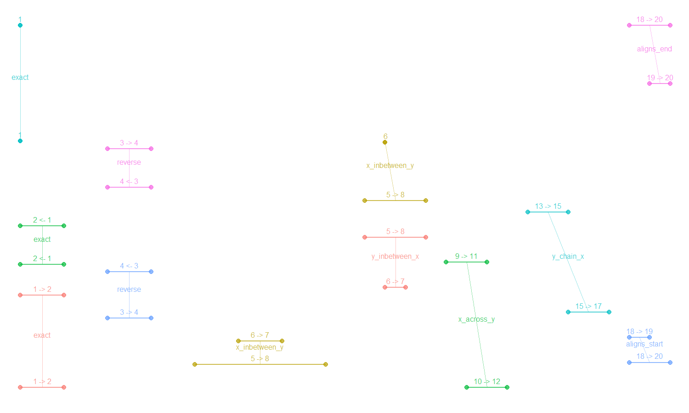

A number_line object is a range of numeric
values. number_line objects as based off
interval objects from the lubridate package
but supports any object that can be successfully coerced to a
numeric object.
For a given number_line object
e.g. 8 <- 1, its main components are;
left_point() - left side of the
number_line i.e. 8
right_point() - right side of the
number_line i.e. 1
start_point() - lower end of the range
i.e. 1
end_point() - upper end of the range i.e.
8
direction - "decreasing"
(<-), "increasing" (->) or
no direction (==)
number_line_width() - difference between the left and
right points i.e. -7
For an "increasing" number_line, its
start_point() is at the left_point(). In
contrast, the start_point() of a "decreasing"
number_line is at the right_point().
library(diyar)
# `number_line` objects
nl_a <- number_line(l = c(3, 5), r = c(4, 1))
nl_a
#> [1] "3 -> 4" "5 <- 1"
# Lower end of the range
start_point(nl_a)
#> [1] 3 1
# Left part of the range
left_point(nl_a)
#> [1] 3 5number_line
There are convenience functions to reverse, shrink, expand or shift a
number_line along the number line.
nl_c <- number_line(as.Date("2019-04-04"), as.Date("2019-4-07"))
nl_c
#> [1] "2019-04-04 -> 2019-04-07"
# Expand the `number_line` by 2 days from both ends
nl_d <- expand_number_line(nl_c, 2); nl_d
#> [1] "2019-04-02 -> 2019-04-09"
# Expand the `number_line` by 2 days from the lower end only
nl_e <- expand_number_line(nl_c, 2, "start"); nl_e
#> [1] "2019-04-02 -> 2019-04-07"
# Shrink the `number_line` by 2 days from the upper end only
nl_f <- expand_number_line(nl_c, -2, "end"); nl_f
#> [1] "2019-04-04 -> 2019-04-05"
# Shrink the `number_line` by 2 days from both ends
nl_g <- expand_number_line(nl_c, -2); nl_g
#> [1] "2019-04-06 <- 2019-04-05"
# Reverse the direction of the `number_line`
nl_h <- reverse_number_line(nl_c); nl_h
#> [1] "2019-04-07 <- 2019-04-04"
# Shift the `number_line` towards the negative end of the number line by 2 days
nl_i <- shift_number_line(nl_c, -2); nl_i
#> [1] "2019-04-02 -> 2019-04-05"
# Shift the `number_line` towards the positive end of the number line by 2 days
nl_j <- shift_number_line(nl_c, 2); nl_j
#> [1] "2019-04-06 -> 2019-04-09"
# Change the left part of the `number_line` to a negative value
nl_k <- invert_number_line(nl_c, "left"); nl_k
#> [1] "-17990 -> 17993"
# Split a `number_line`
nl_l <- seq(nl_c, length.out = 3); nl_l
#> [1] "2019-04-04 -> 2019-04-05" "2019-04-05 -> 2019-04-07"number_line objects can overlap with each other.
diyar recognises seven ways this can happen. These are
exact(), inbetween(), across(),
chain(), aligns_start() and
aligns_end(). The 6 methods are mutually exclusive. There
are 2 convenience methods - "none" and
overlap(), which are mutually inclusive with the other 6.
See Figure 1.
Figure 1: Overlap methods for
number_line

nl_1 <- c(number_line(1, 5), number_line(1, 5), number_line(5, 9))
nl_2 <- c(number_line(1, 2), number_line(2, 7), number_line(0, 6))
# Union
nl_1; nl_2; union_number_lines(nl_1, nl_2)
#> [1] "1 -> 5" "1 -> 5" "5 -> 9"
#> [1] "1 -> 2" "2 -> 7" "0 -> 6"
#> [1] "1 -> 5" "1 -> 7" "0 -> 9"
nl_3 <- number_line(as.Date(c("01/01/2020", "03/01/2020","09/01/2020"), "%d/%m/%Y"),
as.Date(c("09/01/2020", "09/01/2020","25/12/2020"), "%d/%m/%Y"))
nl_4 <- number_line(as.Date(c("04/01/2020","01/01/2020","01/01/2020"), "%d/%m/%Y"),
as.Date(c("05/01/2020","05/01/2020","03/01/2020"), "%d/%m/%Y"))
# Intersect
nl_3; nl_4; intersect_number_lines(nl_3, nl_4)
#> [1] "2020-01-01 -> 2020-01-09" "2020-01-03 -> 2020-01-09"
#> [3] "2020-01-09 -> 2020-12-25"
#> [1] "2020-01-04 -> 2020-01-05" "2020-01-01 -> 2020-01-05"
#> [3] "2020-01-01 -> 2020-01-03"
#> [1] "2020-01-04 -> 2020-01-05" "2020-01-03 -> 2020-01-05"
#> [3] "NA ?? NA"
# Subtract
nl_3; nl_4; subtract_number_lines(nl_3, nl_4)
#> [1] "2020-01-01 -> 2020-01-09" "2020-01-03 -> 2020-01-09"
#> [3] "2020-01-09 -> 2020-12-25"
#> [1] "2020-01-04 -> 2020-01-05" "2020-01-01 -> 2020-01-05"
#> [3] "2020-01-01 -> 2020-01-03"
#> $n1
#> [1] "2020-01-01 -> 2020-01-04" "2020-01-01 -> 2020-01-03"
#> [3] "NA ?? NA"
#>
#> $n2
#> [1] "2020-01-05 -> 2020-01-09" "2020-01-05 -> 2020-01-09"
#> [3] "NA ?? NA"